What this is. The tree, redrawn the way you asked this morning. The canvas is the page everywhere, Safari and the phone included; nothing goes to the outline page unless you ask for it. Every cohort is a small coil instead of a cluster of boxes; click a coil and its numbered list opens beside it. Every Geiger on the canvas is on one scale and no mark is ever bigger than its place on the tree. There is no question mark anywhere: a name with no reading is a quiet dot, and hovering it says why.
Open it: deliverables/20261006/tree-design-preview/index.html. The live tab for comparison: deliverables/20260929/tree-map/index.html. T15's connections (the index lines, a name's funds and peers) are kept, with the same CONNECTIONS toggle.
Pictures · live tab on the left, this preview on the right · 1680 × 1050, Alan's MacBook
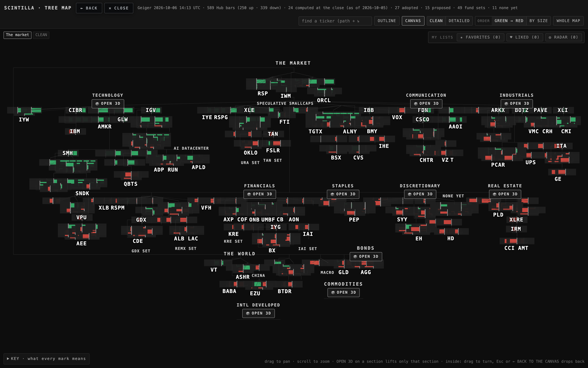
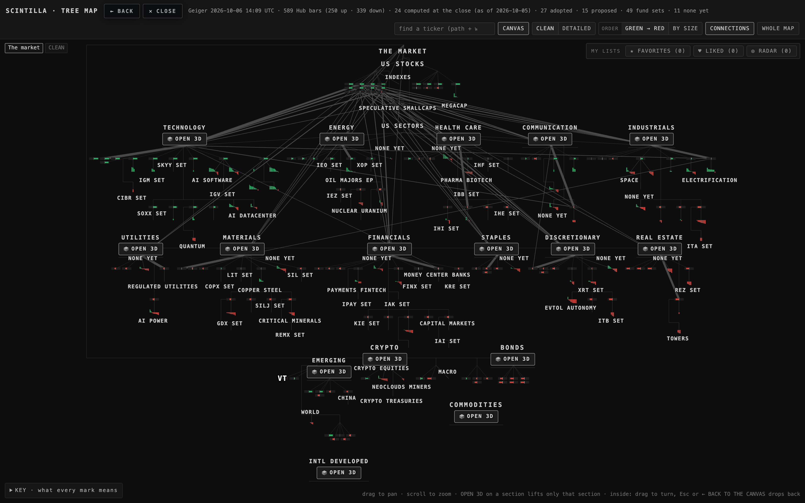
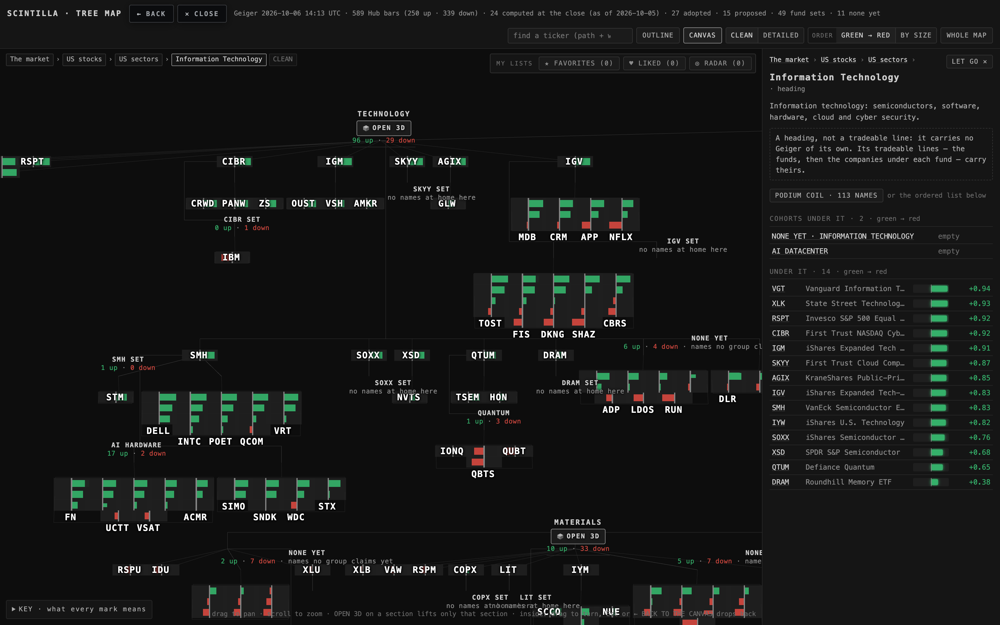
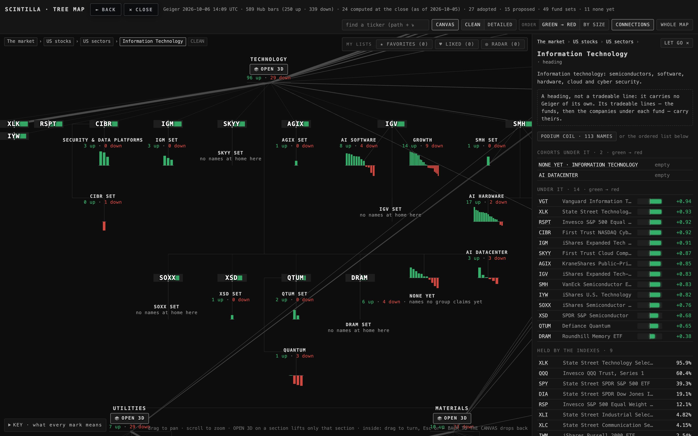
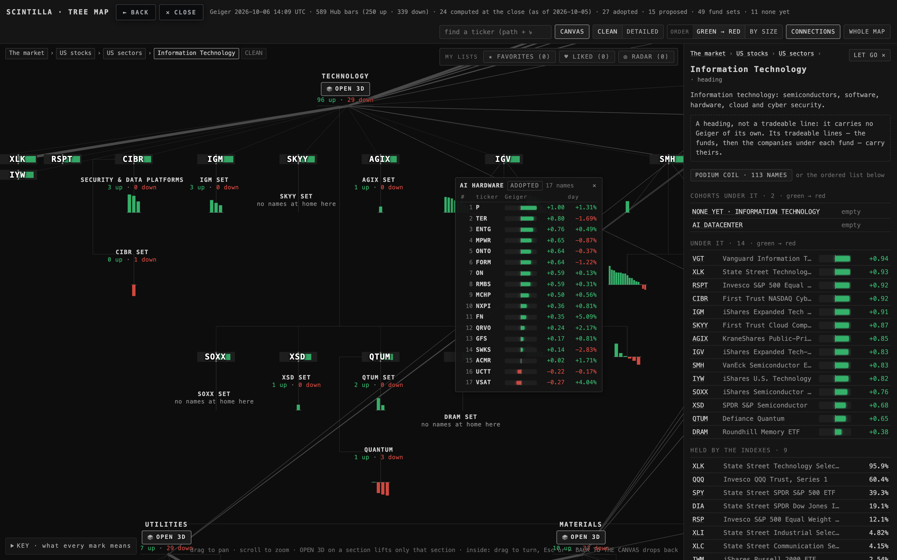
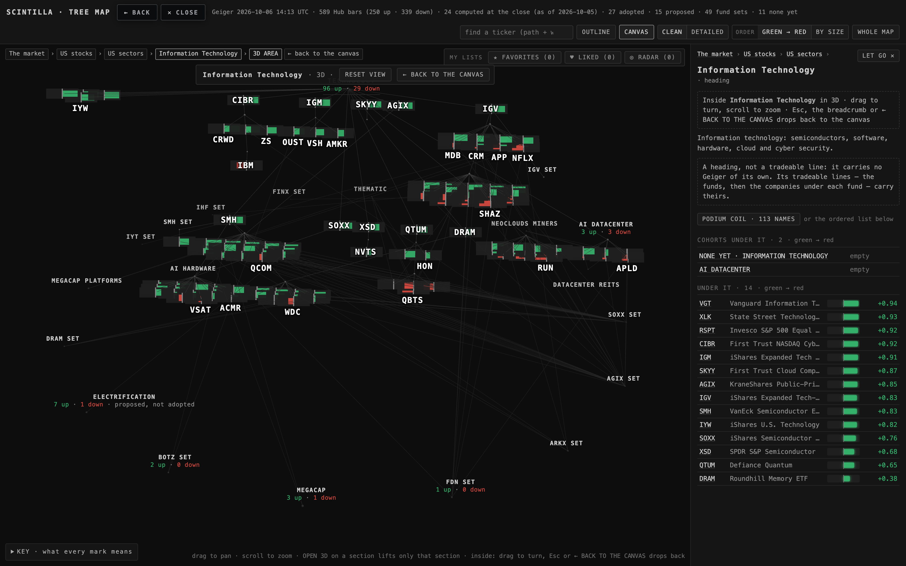
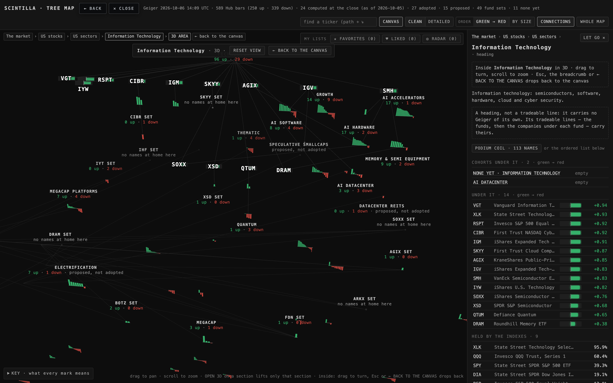
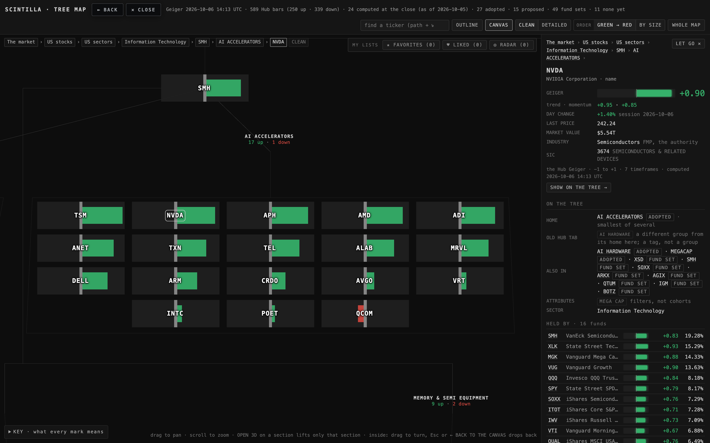
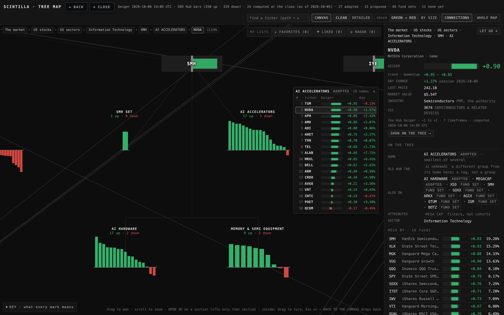
Safari-sized (1440 × 900) and the phone (390 × 844)
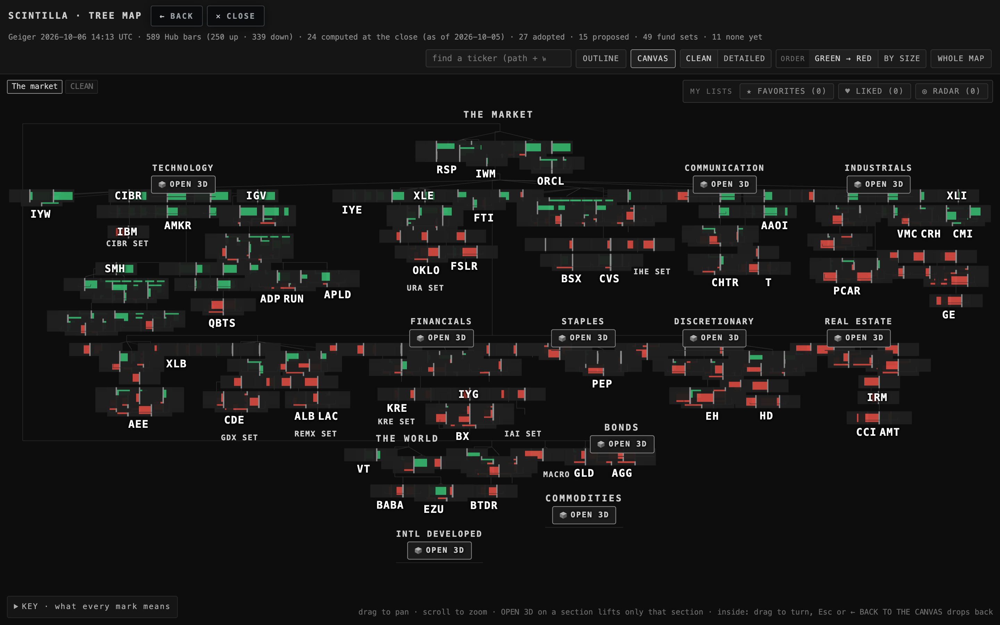
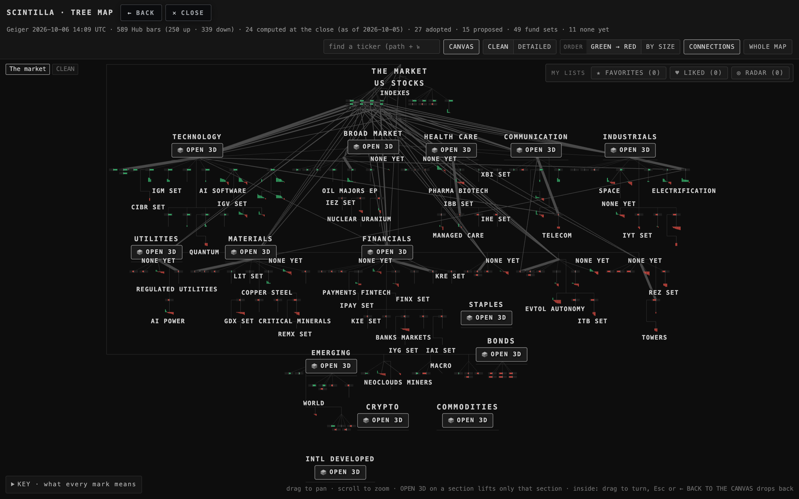
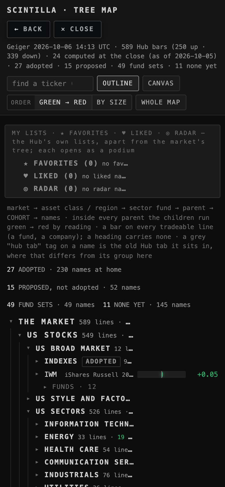
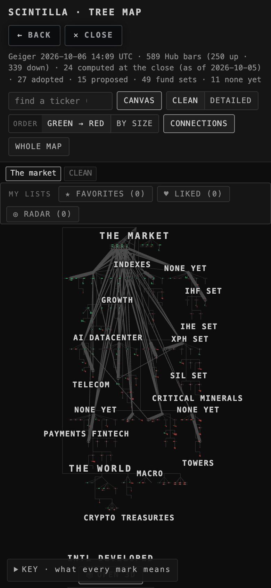
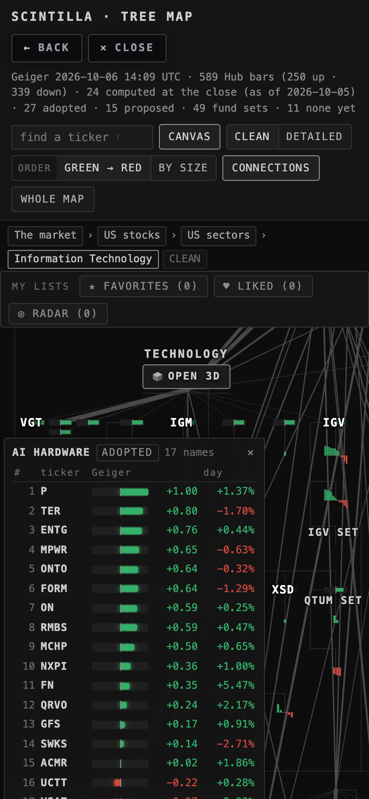
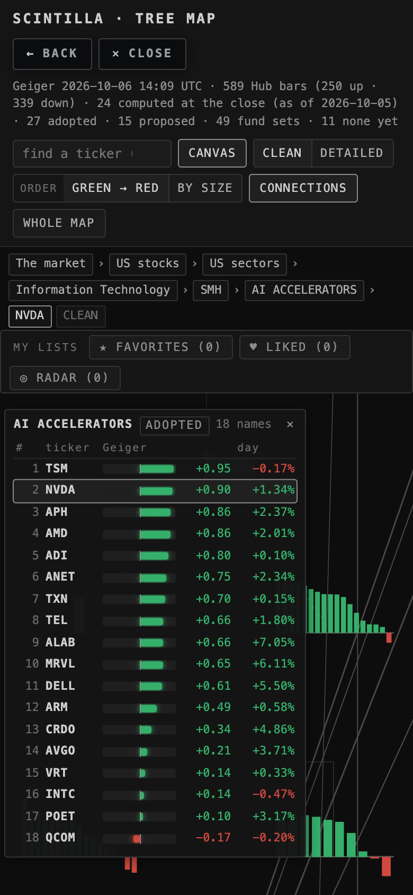
What changed, in five lines
1 · Canvas everywhere. The page opens on the canvas at every width. The OUTLINE button is gone from the bar; a small "≡ list" link inside the KEY still opens the indented list if you ever want it. Nothing opens as a list unless you click a node.
2 · Cohorts as coils. Each of the 102 cohorts (27 adopted, 15 proposed, 49 fund sets, 11 none-yet) is drawn as one coil — the coil-lab bow tie laid flat: its names as bars, green up / red down, longest first, a quiet dot for a name with no reading. 62 coils have names; the 40 empty fund sets show their title only. Clicking a coil opens its numbered list; a row opens the company card. Sectors keep their branch from THE MARKET; the indexes and the connections from T15 stay.
3 · One Geiger scale. 34 world units per 1.0 of reading, for a fund's box and a coil's bar alike, and no pixel floor: a mark is as big as its slot on the tree and never bigger. Zoomed out the marks are small and the structure reads; zoom in and the Geigers read.
4 · No "?". The only "?" on the live page was a remark in the KEY; it is gone, and a missing reading is now a dot on the canvas, in the list and on the card, with the reason on hover ("no reading yet — not admitted, and no close-of-day reading either" / "served, but the live Geiger has not answered for it").
5 · The look. The page's own colours, fonts and spacing — no new token, no new colour. Labels never sit on each other: the T15 crowding came from captions whose second line was never measured, and from the OPEN 3D button being taller than the label code assumed; both are fixed. 0 overlaps at every moment and width in the proof.
What was measured
| pages · widths · moments | live and preview · 1680 × 1050, 1440 × 900, 390 × 844 · home, Technology zoomed, a coil expanded, Technology OPEN 3D, NVDA's card |
| page errors | 0 on every run (headless Chrome, software WebGL, scale 2) |
| label overlaps · "?" printed | preview: 0 and 0 at every moment · live: 0 overlaps, one "?" (the KEY's remark) |
| boxes at home, 1680 | live 613 boxes at 60 px (the floor) · preview 200 boxes at 19.3 px (the slot) + 62 coils |
| the list | AI HARDWARE: 17 rows, first "1 P +1.00 +0.89 %"; NVDA's card opens AI ACCELERATORS' list with 18 rows and NVDA marked |
| tests | tests/tree-design-preview-t16.test.mjs (7) · the suite stays at its 7 known failures |
What could be wrong
At the zoom-out the fund tickers are not printed (the boxes are 19 px there, the ticker would not fit) — the structure reads, the tickers come as you zoom. If you want names at home too, the slot would have to grow (a layout change, not a floor). The coils' bars at home are a few pixels tall; they are true to the scale. The day column of a list fills once the quotes arrive (a second or two after the page). Inside a lifted section the ring of "also in" cohorts now carries their coils, which is busier than the balls were.
What was not done
Nothing deployed; the live TREE tab and the Hub's index.html are untouched. The podium (PODIUM COIL) is as it was. The OUTLINE page itself was not redesigned (it is reachable from the KEY only). The coil-lab's V6 laser look was not brought onto the canvas: the canvas coil is the matte bow tie (V5), flat; the 3D laser coil stays where the podium is.
PAGE SPECS
Folder: deliverables/20261006/tree-design-preview/, a copy of T15's preview (deliverables/20261005/tree-live-connected/) with index.html and map3d.js changed (every changed line carries "T16"); tree.json, layout.js, connections.js and the data files are T15's byte for byte.
Sizes, as a share of the tree then in px at 1680 wide: a fund's box 68 × 18 world units (about 1/100 of the tree's width; 19 px at home, 71 px with Technology framed); a coil's bar up to 34 units up or down (the same 1.0 as a box's half-fill); a coil at most 68 units wide (a bar 8 units wide, thinner when a cohort has more than 8 names: AI HARDWARE's 17 bars are 4 units each). Columns 80 apart, rows 28, levels 96, wrapped rows 130.
The list: a DOM panel in the label layer, 250–300 px wide, at most 70 % of the canvas tall (it scrolls), placed to the right of the coil (left when the right edge is near), pushed inside the canvas; labels keep off it. Rank = the coil's order (reading, then ticker). Day % = the chart API's /quotes change_pct.
Proof: node proof-t16.mjs (serve the repo root on 127.0.0.1:8768 first); it drives proof.mjs (headless Chrome, SwiftShader, cross-origin relaxed for the chart API, the profile deleted after) and writes shots/t16-*.png and shots/t16-proof.json.